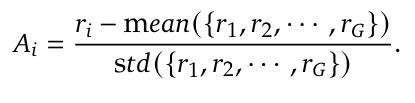
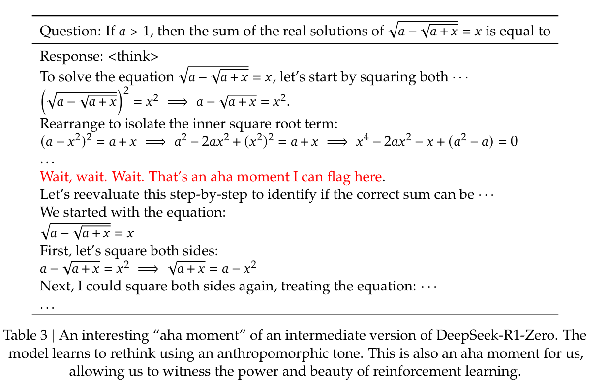
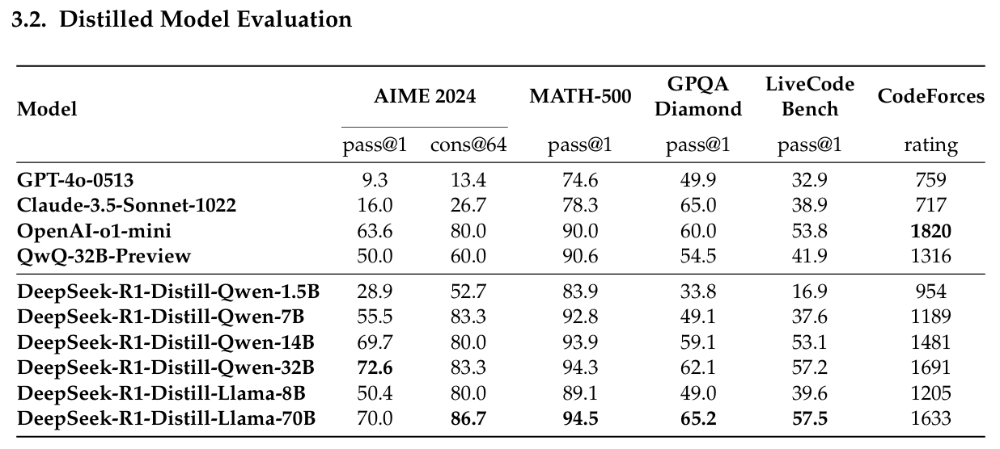

Thoughts of Deepseek R1
Table of Contents
- 1. Overview
- 2. Methodology
- 2.1. RL algorithm: GRPO (Group Relative Policy Optimization)
- 2.2. Reward Model
- 2.3. Prompts during RL
- 2.4. Test-time Scaling can be Automatically Learned during RL; "Self-evolution Process"
- 2.5. "Aha Moment"
- 2.6. R1's training-stage I: cold start
- 2.7. R1's training-stage II: another SFT to enhance model's general-purpose abilities
- 2.8. R1's final further RL
- 2.9. Distillation
- 3. Unsuccessful Attempts
- 4. Source Code Reading: HF's Open R1
1. Overview
- R1-Zero: a model only with RL but without SFT.
- Deepseek R1: add cold start and multi-stage training before RL
- Distillation of small LLMs from R1
- Qwen2.5-32B
- Llama3
- 1.5B, 7B, 8B, 14B, 32B, 70B
Evaluations on AIME2024, Codeforces, GPQA-Diamond, MATH-500, MMLU, and SWE-bench Verified, show that R1 can obtain comparable results with o1.
Target of R1: to replicate the performance of o1, i.e., to "improve language model reasoning capabilities (inference-time scaling) via a pure RL."
Inference-time scaling by o1: means that we can obtain better reasoning ability by increasing the length of the Chain-of-Tought reasoning process.
Base pretrained model: Deepseek-V3-Base
RL algorithm: GRPO.
2. Methodology
2.1. RL algorithm: GRPO (Group Relative Policy Optimization)
Motivation:
- the critic model is unnecessary to own the same size as the policy model
- multiple sampled action, instead of only one sampled action.
Objective Formula (to maximize):

where:
- Q: Question (Query) dataset
- q: query question text
- \(\pi\): policy
- O: output distribution
- o_i: i-th output set
- G: group number
- A_i: Normalized "debiased reward", also named as "supervise" or "advantage". (will shown later).
- D_{KL}: KL-divergence
Meaning of this formula: for each question in the query dataset Q, collecting G outputs. For each output, compute its advantage, and scale it with the gain of probability proportion. Using KL divergence to constrain the training model with he reference model.
A's formular:

\(r\) denotes rewards.
2.2. Reward Model
There is no trained reward model for R1, with the following reasons:
- reward hacking problem (see lilian's blog)
- the additional training resources with corresponding complexities
Reward model used here:
- Accuracy rewards: like the answer of math problem.
- Format rewards: check whether the model put its thinkign procedure into <think> </think>, for example.
2.3. Prompts during RL
A conversation between User and Assistant. The user asks a question, and the Assistant solves it. The assistant first thinks about the reasoning process in the mind and then provides the user with the answer. The reasoning process and answer are enclosed within <think> </think> and <answer> </answer> tags, respectively, i.e., <think> reasoning process here </think> <answer> answer here </answer>. User: prompt. Assistant:
where prompt where be replaced with corresponding reasoning prompts.
2.4. Test-time Scaling can be Automatically Learned during RL; "Self-evolution Process"
During RL training, the increase of performance is consistent with the increase of average response length, as shown below:


2.5. "Aha Moment"
Aha Moment denotes the moment when "a LLM learns to re-evaluate its initial approach so that it will allocate more thinking time to a problem".
An example here:

2.6. R1's training-stage I: cold start
method: collecting thousands of SFT samples.
SFT dataset is collected from:
- fewshot prompting. I.e., in the prompt, there will be some long CoT examples that is very standard (e.g., with reflection, verification, readable format, etc).
- human refined training samples.
Besides, during cold start:
- Readability: they use a readable pattern to ensure the thinking procedure follows a markdown format.
- Language Mixing: add a reward about the diversity of language during reasoning to reduce the language mixing phenomenon. –> will result in a slight performance degradation.
2.7. R1's training-stage II: another SFT to enhance model's general-purpose abilities
For reasoning data:
- expanding the data that by incorporating additional data, some of which use a generative reward model (i.e., not only rule-based reward) by feeding the ground-truth and model predictions into Deepseek-V3 for judgment.
- filtering out CoT with mixed languages, long paragraphs, and code blocks
- 600k samples.
For non-reasoning data (e.g, writing, factual QA, self-cognition, translation, …):
- the same as V3
- 200k training samples
2.8. R1's final further RL
blablabla, to enable its diversity, and reduce risks.
2.9. Distillation
They use the 800k high-quality SFT data (described in R1's two trianing-stage) to distill a series of open source models, leveraging RL on these models as future work.
The results are impressive:

3. Unsuccessful Attempts
- Process reward model. This demonstrates that we cannot explicitly define the reward for the "thinking procedure".
- Monte Carlo Tree Search: Not suitable with token generation.
4. Source Code Reading: HF's Open R1
GRPO: use trl's standard implementation.
4.1. Accuracy Reward
def accuracy_reward(completions, solution, **kwargs): """Reward function that checks if the completion is the same as the ground truth.""" contents = [completion[0]["content"] for completion in completions] rewards = [] for content, sol in zip(contents, solution): gold_parsed = parse( sol, extraction_mode="first_match", extraction_config=[LatexExtractionConfig()], ) if len(gold_parsed) != 0: # We require the answer to be provided in correct latex (no malformed operators) answer_parsed = parse( content, extraction_config=[ LatexExtractionConfig( normalization_config=NormalizationConfig( nits=False, malformed_operators=False, basic_latex=True, equations=True, boxed="all", units=True, ), # Ensures that boxed is tried first boxed_match_priority=0, try_extract_without_anchor=False, ) ], extraction_mode="first_match", ) # Reward 1 if the content is the same as the ground truth, 0 otherwise reward = float(verify(answer_parsed, gold_parsed)) else: # If the gold solution is not parseable, we reward 1 to skip this example reward = 1.0 print("Failed to parse gold solution: ", sol) rewards.append(reward) return rewards
4.2. Format Reward
def format_reward(completions, **kwargs): """Reward function that checks if the completion has a specific format.""" pattern = r"^<think>.*?</think>\s*<answer>.*?</answer>$" completion_contents = [completion[0]["content"] for completion in completions] matches = [re.match(pattern, content, re.DOTALL | re.MULTILINE) for content in completion_contents] return [1.0 if match else 0.0 for match in matches]
4.3. Step by Step reward. (NOT USED in the PAPER)
"whether the model can provide a clear thinking procedure or not".
def reasoning_steps_reward(completions, **kwargs): r"""Reward function that checks for clear step-by-step reasoning. Regex pattern: Step \d+: - matches "Step 1:", "Step 2:", etc. ^\d+\. - matches numbered lists like "1.", "2.", etc. at start of line \n- - matches bullet points with hyphens \n\* - matches bullet points with asterisks First,|Second,|Next,|Finally, - matches transition words """ pattern = r"(Step \d+:|^\d+\.|\n-|\n\*|First,|Second,|Next,|Finally,)" completion_contents = [completion[0]["content"] for completion in completions] matches = [len(re.findall(pattern, content)) for content in completion_contents] # Magic nubmer 3 to encourage 3 steps and more, otherwise partial reward return [min(1.0, count / 3) for count in matches]
4.4. Len Reward (NOT USED in the PAPER, it is kimi 1.5's.)
constrain the length of chain-of-thought.
def len_reward(completions: list[Dict[str, str]], solutions: list[str], **kwargs) -> float: """Compute length-based rewards to discourage overthinking and promote token efficiency. Taken from from the Kimi 1.5 tech report: https://arxiv.org/abs/2501.12599 Args: completions: List of model completions solutions: List of ground truth solutions Returns: List of rewards where: - For correct answers: reward = 0.5 - (len - min_len)/(max_len - min_len) - For incorrect answers: reward = min(0, 0.5 - (len - min_len)/(max_len - min_len)) """ contents = [completion[0]["content"] for completion in completions] # First check correctness of answers correctness = [] for content, sol in zip(contents, solutions): gold_parsed = parse( sol, extraction_mode="first_match", extraction_config=[LatexExtractionConfig()], ) if len(gold_parsed) == 0: # Skip unparseable examples correctness.append(True) # Treat as correct to avoid penalizing print("Failed to parse gold solution: ", sol) continue answer_parsed = parse( content, extraction_config=[ LatexExtractionConfig( normalization_config=NormalizationConfig( nits=False, malformed_operators=False, basic_latex=True, equations=True, boxed=True, units=True, ), boxed_match_priority=0, try_extract_without_anchor=False, ) ], extraction_mode="first_match", ) correctness.append(verify(answer_parsed, gold_parsed)) # Calculate lengths lengths = [len(content) for content in contents] min_len = min(lengths) max_len = max(lengths) # If all responses have the same length, return zero rewards if max_len == min_len: return [0.0] * len(completions) rewards = [] for length, is_correct in zip(lengths, correctness): lambda_val = 0.5 - (length - min_len) / (max_len - min_len) if is_correct: reward = lambda_val else: reward = min(0, lambda_val) rewards.append(float(reward)) return rewards
4.5. Cosine Scaled Reward (NOT USED in the PAPER)
Reward function that scales based on completion length using a cosine schedule. Shorter correct solutions are rewarded more than longer ones. Longer incorrect solutions are penalized less than shorter ones.
def get_cosine_scaled_reward( min_value_wrong: float = -1.0, max_value_wrong: float = -0.5, min_value_correct: float = 0.5, max_value_correct: float = 1.0, max_len: int = 1000, ): def cosine_scaled_reward(completions, solution, **kwargs): """Reward function that scales based on completion length using a cosine schedule. Shorter correct solutions are rewarded more than longer ones. Longer incorrect solutions are penalized less than shorter ones. Args: completions: List of model completions solution: List of ground truth solutions This function is parameterized by the following arguments: min_value_wrong: Minimum reward for wrong answers max_value_wrong: Maximum reward for wrong answers min_value_correct: Minimum reward for correct answers max_value_correct: Maximum reward for correct answers max_len: Maximum length for scaling """ contents = [completion[0]["content"] for completion in completions] rewards = [] for content, sol in zip(contents, solution): gold_parsed = parse(sol, extraction_mode="first_match", extraction_config=[LatexExtractionConfig()]) if len(gold_parsed) == 0: rewards.append(1.0) # Skip unparseable examples print("Failed to parse gold solution: ", sol) continue answer_parsed = parse( content, extraction_config=[ LatexExtractionConfig( normalization_config=NormalizationConfig( nits=False, malformed_operators=False, basic_latex=True, equations=True, boxed=True, units=True, ), boxed_match_priority=0, try_extract_without_anchor=False, ) ], extraction_mode="first_match", ) is_correct = verify(answer_parsed, gold_parsed) gen_len = len(content) # Apply cosine scaling based on length progress = gen_len / max_len cosine = math.cos(progress * math.pi) if is_correct: min_value = min_value_correct max_value = max_value_correct else: # Swap min/max for incorrect answers min_value = max_value_wrong max_value = min_value_wrong reward = min_value + 0.5 * (max_value - min_value) * (1.0 + cosine) rewards.append(float(reward)) return rewards return cosine_scaled_reward
4.6. Repetition Penalty Reward (NOT Used in the Paper, but promising)
def get_repetition_penalty_reward(ngram_size: int, max_penalty: float): """ Computes N-gram repetition penalty as described in Appendix C.2 of https://arxiv.org/abs/2502.03373. Reference implementation from: https://github.com/eddycmu/demystify-long-cot/blob/release/openrlhf/openrlhf/reward/repetition.py Args: ngram_size: size of the n-grams max_penalty: Maximum (negative) penalty for wrong answers """ if max_penalty > 0: raise ValueError(f"max_penalty {max_penalty} should not be positive") def zipngram(text: str, ngram_size: int): words = text.lower().split() return zip(*[words[i:] for i in range(ngram_size)]) def repetition_penalty_reward(completions, **kwargs) -> float: """ reward function the penalizes repetitions ref implementation: https://github.com/eddycmu/demystify-long-cot/blob/release/openrlhf/openrlhf/reward/repetition.py Args: completions: List of model completions """ contents = [completion[0]["content"] for completion in completions] rewards = [] for completion in contents: if completion == "": rewards.append(0.0) continue if len(completion.split()) < ngram_size: rewards.append(0.0) continue ngrams = set() total = 0 for ng in zipngram(completion, ngram_size): ngrams.add(ng) total += 1 scaling = 1 - len(ngrams) / total reward = scaling * max_penalty rewards.append(reward) return rewards return repetition_penalty_reward